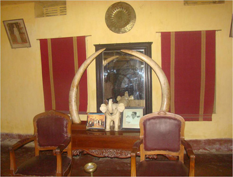

বৈচিত্র্যময় খাগড়াছড়ি

মানরাজা মংপ্র“ সেইনের রাজবাড়িতে শোভা পেত দুষ্প্রাপ্য এই হস্তিদাঁত দু’টি। এই হাতির দাঁত দু’টির গোঁড়ার দিকের ব্যাস (Diameter) হচ্ছে ১৬ ইঞ্চি এবং দৈর্ঘ্য হচ্ছে ৫ফুট ৬ইঞ্চি।
১৯৩০ সালে পার্শ্ববর্তী আসামের পার্বত্য অঞ্চল থেকে রামগড় হয়ে অনেকগুলো পাহাড়ী হাতী মানিকছড়ি এলাকায় আসে। এদের মধ্যে একটি হাতী উচ্চতায় ছিল ১৬ফুট ৮ইঞ্চি। মানরাজা মংপ্র“ সেইন ছিলেন একজন দক্ষ শিকারী। তিনি গুলি করে ঐ হাতিটি মেরে এই দাঁত দু’টি বের করে নেন।
পাকিস্তান আমলে রাষ্ট্রপতি জেনারেল ইস্কান্দার মির্জা এই দাঁত দু’টি নিয়ে রাষ্ট্রপতি ভবনে স্থাপন করতে চেয়েছিল। কিন্তু মংরাজা মংপ্র“ সেইনের আপত্তির কারণে তা নেয়া সম্ভব হয়নি। ২ মে ’৭১ রামগড় হয়ে ভারতের সাবরুমের উদ্দেশ্যে মানিকছড়ি রাজবাড়ি ত্যাগের পূর্বক্ষণে রাজপরিবারের সদস্যরা রাজবাড়ির ভিতরের একটি গোপন স্থাপন পলিথিনে জড়িয়ে গর্ত করে দাঁত দু’টি রেখে গিয়েছিলেন।
দেশকে শত্র“মুক্ত করে মানিকছড়ি রাজবাড়িতে ফিরে এসে নির্দিষ্ট স্থানে গর্ত খুঁড়ে রাজা মংপ্র“ সেইন এই দাঁত দু’টি ফিরে পেয়েছিলেন। দুর্লভ এই হাতীর দাঁত দু’টি রাজপরিবারের সদস্যরা এখনও রক্ষণাবেক্ষণ করে যাচ্ছেন।